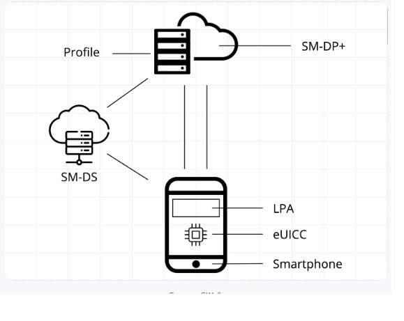

SM-DP+ 주소란 무엇일까요?
SM-DP+라는 약어는 "Subscription Manager Data Preparation Plus"를 의미합니다. e
SIM을 다운로드하고 관리할 수 있는 원격 서버를 식별하는 고유 코드입니다.
귀하의 장치와 통신 사업자 간의 데이터 교환을 가능하게 하는 브리지라고 생각할 수 있습니다.
SM-DP+ 주소는 가입자 식별 모듈(SIM) 카드가 장착된 각 모바일 기기에 할당된 고유 식별자
역할을 합니다.
각 SIM 카드(또는 eSIM)는 기기의 전화번호, 네트워크 운영자 및 기타 필수 세부 정보와 같은 중요한
데이터를 저장합니다. 이를 통틀어 프로필이라고 합니다. SM-DP+는 이러한 프로필을 유지 관리하고 관리하는
역할을 하며 프로필 활성화, 비활성화 및 삭제와 같은 프로세스를 수행합니다.
SM-DP+ 주소는 네트워크에서 모바일 기기를 인식하는 수단으로 기능합니다.
